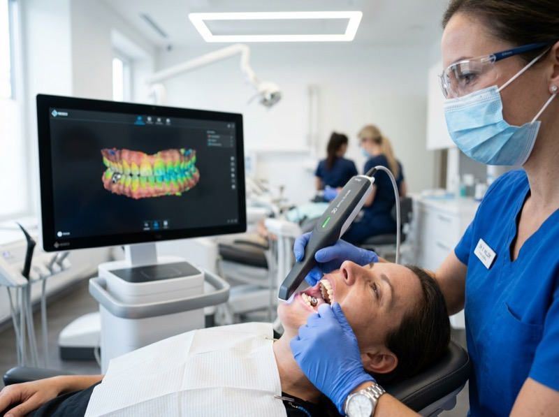
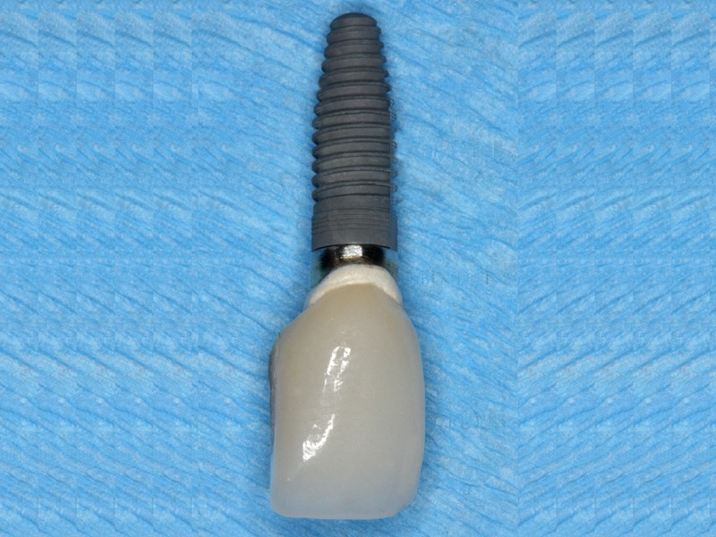
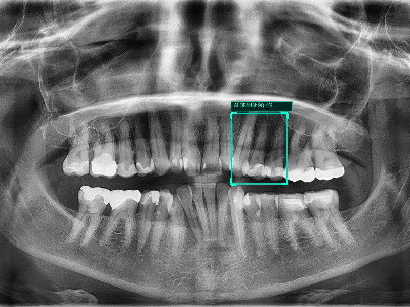
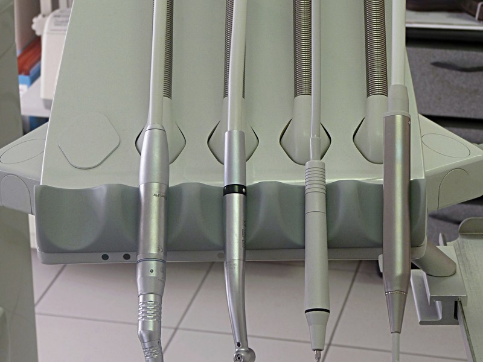
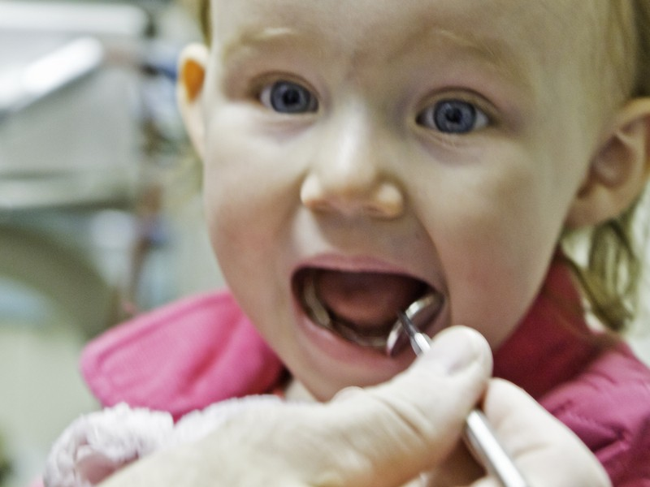
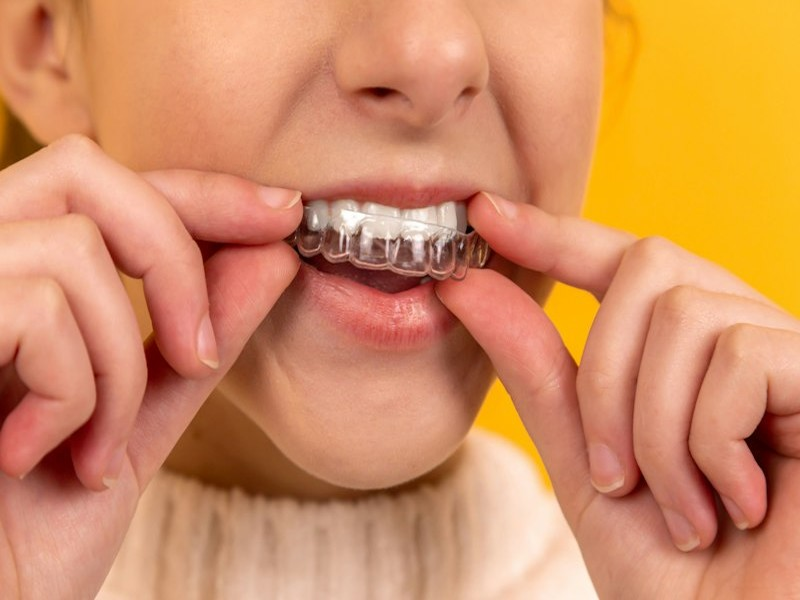
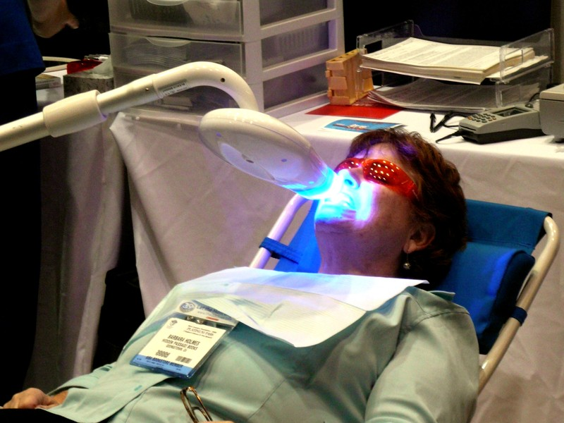

3D Intraoral Scanning
A wand-sized camera builds a precise 3D model of your teeth in about two minutes, replacing messy impression putty for crowns, aligners and night guards.
3D cone-beam imaging, computer-guided implant surgery and microscope-assisted root canals let us find problems earlier and treat them with less drilling, less radiation and faster healing.

Each tool below replaces an older, slower or more invasive method, so appointments are shorter and results are more predictable.

A wand-sized camera builds a precise 3D model of your teeth in about two minutes, replacing messy impression putty for crowns, aligners and night guards.

Your implant is planned on a 3D scan and placed through a custom surgical guide, which means smaller incisions and sub-millimeter accuracy.

Software trained on millions of X-rays flags early decay between teeth, so we can treat it with a small filling before it ever hurts.

Ultrasonic micro-vibrations cut bone precisely while sparing nerves and gum tissue, making extractions and bone grafts gentler to recover from.
Teeth and gums change as we age. Each stage gets the right specialist and the right preventive plan.

Fluoride varnish, protective sealants and fun, fear-free first visits with our pediatric dentist.
Book a Child Visit
Clear aligners, ceramic braces and custom sports mouthguards that protect smiles through growth spurts.
Book Ortho Consult
Tooth-colored repairs, veneers, gum treatment and in-office whitening that fit around a busy schedule.
Book Cosmetic ConsultImplant-supported dentures, dry-mouth therapy, bone grafting and care for existing crowns and bridges.
Book Implant ConsultTraditional dental labs take weeks of waiting with unstable temporary crowns. Our in-house digital suite designs, mills, and seats permanent ceramics in one visit.
Our intraoral scanner captures 24 million surface coordinates with 7-micron accuracy. Zero gagging, zero messy silicone putty trays.
Your doctor custom-contours anatomical margins, contact points, and natural bite dynamics live on a high-resolution 4K operatory display.
A diamond-tooled 5-axis robotic mill shapes monolithic zirconia or lithium disilicate to within 10 microns of anatomical perfection.
Custom-glazed and furnace-sintered for natural translucency, then permanently bonded so you leave with your final restoration the same day.
Our hygienists' most-asked questions, answered with the clinical facts behind them.
Enamel softens once mouth pH drops below 5.5. Brushing straight after coffee, citrus or soda scrubs away that softened layer, while waiting lets saliva re-harden it.
Tip: Rinse with plain water right after acidic food or drinks.
Bleeding when you floss usually means gingivitis. Treated early with a professional clean, it is fully reversible. Left alone, it can spread below the gumline and destroy the bone that holds teeth in place.
Benchmark: Gum pockets deeper than 4 mm need a deep cleaning.
A stable clot is what heals the socket. For 72 hours, avoid straws, smoking and forceful spitting, and use a cold compress for the first 24 hours to limit swelling.
Aftercare: Start warm saltwater rinses (½ tsp salt in a cup of water) after 24 hours.
Sonic brushes make around 31,000 strokes a minute and studies show they remove noticeably more plaque than manual brushing, especially along the gumline.
Technique: Angle bristles 45° toward the gumline and let the brush do the work.